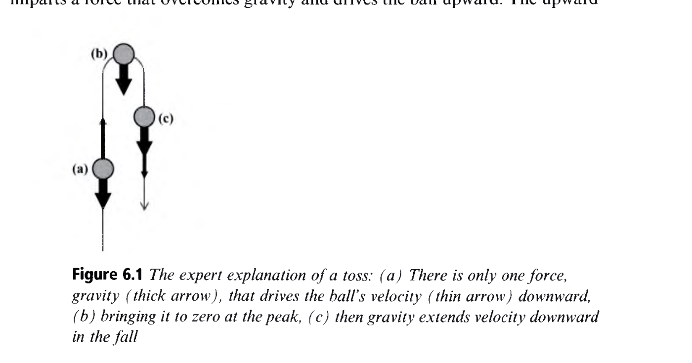
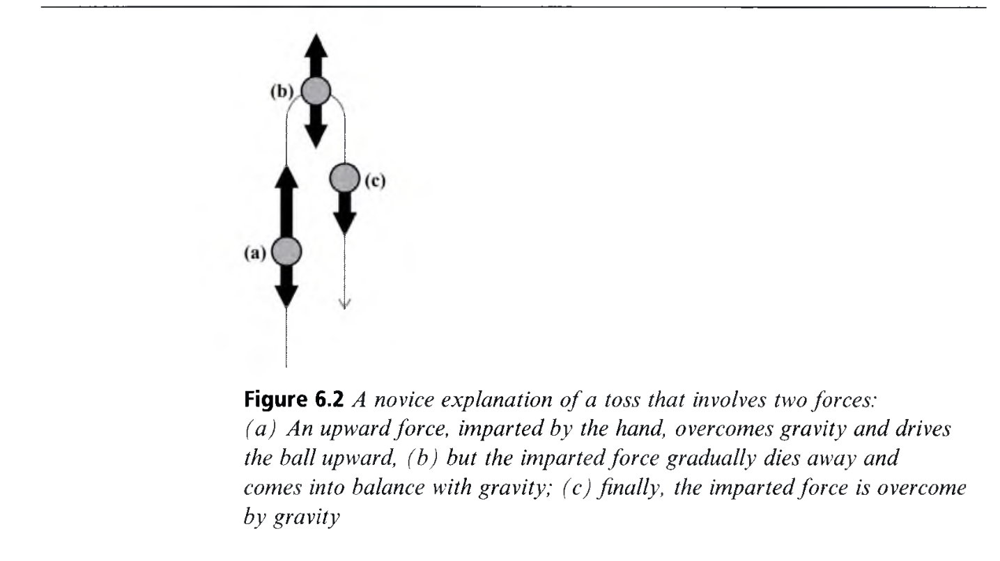

A History of Conceptual Change Research
개념 변화 연구의 역사: 학파와 단층선, 이론-이론(TT) vs 조각난 지식(KiP)
👥 저자 및 출처
Andrea A. diSessa (University of California, Berkeley)
『The Cambridge Handbook of the Learning Sciences』 (3rd Ed., 2022, pp. 115–134)
🎯 챕터 핵심 아젠다
- '백지설'의 파산: 학생은 무지한 것이 아니라 다르게 생각한다
- 고전적 국면: 피아제, 쿤의 패러다임 전환, 포스너의 4대 조건
- 이론-이론 (TT): 소박 이론의 혁명적 전면 교체 (Carey, Vosniadou)
- 조각난 지식 (KiP): 현상학적 원초식(p-prims)과 지식의 재조직화
🎯 강의 목표 및 핵심 맥락 (Context & Goal)
본 장은 학습과학의 가장 근본적인 인지 연구 분야인 '개념 변화(Conceptual Change)'의 40년 역사를 조망하고, 학생의 직관적 지식을 바라보는 양대 산맥(이론-이론 vs 조각난 지식)의 학술적 논쟁을 탐구합니다.
📖 원문 심층 학술 해설 (Detailed Academic Commentary)
안드레아 디세사(Andrea diSessa)는 MIT 인공지능 연구소와 UC 버클리에서 물리학 교육과 인지 구조를 연구해 온 세계적 석학으로, '현상학적 원초식(p-prims)'과 '조각난 지식(KiP)' 이론을 창시한 장본인입니다.
💡 수업/세미나 진행 팁 & 질문 가이드
"왜 물리학과 화학을 배운 성인들조차 실생활에서는 뉴턴 역학이 아닌 중세 아리스토텔레스식으로 생각할까요?"라는 질문으로 시작하세요.
공 던지기(Toss) 역학 사례: 전문가 vs 초보자
공을 위로 던졌을 때 공에 작용하는 힘은 몇 개인가?
🎯 물리학 전문가의 정답 (Figure 6.1)
- 손을 떠난 순간 공에 작용하는 힘은 **오직 중력($F_g$) 하나뿐**
- 중력이 속도를 줄여 최고점에서 0으로 만들고 아래로 가속
- 힘은 '속도'가 아니라 '가속도(속도의 변화율)'를 결정함
🚫 초보자의 직관 멘탈 모델 (Figure 6.2)
- "손이 준 힘(Impetus)이 공을 위로 밀어 올린다."
- "올라가면서 손의 힘이 점점 소진(Dying away)된다."
- "최고점에서 힘이 비기고, 결국 중력이 이겨 떨어진다."
🎯 강의 목표 및 핵심 맥락
공 던지기(Toss) 역학 문제를 통해 뉴턴 물리학의 정답과 초보자의 직관적 임페투스(Impetus) 오개념의 구조적 차이를 대조합니다.
📖 원문 심층 학술 해설
초보자들은 거의 100% '손이 가한 힘'이 공에 깃들어 올라가다가 서서히 닳아 없어진다는 2개 힘(Two forces) 모델을 제시합니다. 이는 중세 물리학자 뷔리당의 임페투스 이론과 일치합니다.
💡 수업/세미나 진행 팁 & 질문 가이드
청중에게 직접 공 던지기 상황에서 손을 떠난 공에 작용하는 힘의 화살표를 그려보게 하세요.
전문가의 뉴턴 역학 표상 분석 (Figure 6.1)
단 하나의 힘(중력)이 속도의 변화율을 지배한다
📐 뉴턴 역학의 엄밀한 메커니즘
- 굵은 화살표: 오직 아래 방향으로 작용하는 일정 크기의 중력($F_g$)
- 얇은 화살표: 공의 속도($v$) 벡터
- (a) 상승 중: 속도는 위쪽이지만 중력은 아래쪽 ➔ 감속
- (b) 최고점: 속도 $v = 0$이지만 중력은 여전히 아래로 작용
- (c) 하강 중: 속도와 중력 모두 아래쪽 ➔ 가속

🎯 강의 목표 및 핵심 맥락
원서 Figure 6.1을 통해 전문가가 힘과 속도를 분리하여 단일 중력 가속도로 상황을 모델링하는 방식을 설명합니다.
📖 원문 심층 학술 해설
전문가에게 힘(Force)은 물체의 '현재 운동 상태(속도)'가 아니라 '운동 상태의 변화(가속도)'를 유발하는 작용입니다. 이 구분을 명확히 하는 것이 개념 변화의 핵심입니다.
💡 수업/세미나 진행 팁 & 질문 가이드
"최고점에서 공이 잠시 멈췄을 때 공에 작용하는 알짜힘은 0인가, 아닌가?"를 질문하여 개념을 점검하세요.
초보자의 임페투스(Impetus) 멘탈 모델 (Figure 6.2)
"힘이 물체에 부여되어 소진된다"는 2개 힘 경쟁 모델
⚠️ 직관적 오개념의 3단계 서사 구조
- (a) 추진 단계: 손이 준 위쪽 힘이 중력을 압도하여 공이 상승
- (b) 평형 단계: 상승하며 손의 힘이 소진(Dying away)되어 최고점에서 중력과 평형
- (c) 낙하 단계: 손의 힘이 고갈되어 중력이 공을 지배하여 낙하

🎯 강의 목표 및 핵심 맥락
원서 Figure 6.2를 통해 초보자가 힘을 '물체에 내재된 에너지나 추진력'으로 취급하는 임페투스 멘탈 모델의 작동 서사를 분석합니다.
📖 원문 심층 학술 해설
이 초보자 모델은 매우 그럴듯하고 일관성이 있어서, 일반적인 강의식 수업을 듣고 시험을 치른 대학생들조차 시험 후에는 다시 이 모델로 회귀합니다.
💡 수업/세미나 진행 팁 & 질문 가이드
학생들이 왜 '손의 힘이 공에 남아있다'고 굳게 믿는지 그 직관적 근원을 탐색해 보세요.
'백지설(Blank Slate)'의 파산과 개념 변화의 발견
"학생들은 지식이 없는 것이 아니라, 완전히 다른 방식으로 생각한다"
🚫 전통적 백지설의 착각 ("Say it better")
- 학생의 오답 원인: "물리가 너무 추상적이어서", "설명이 부족해서"
- 처방: "더 쉽게, 더 친절하게 설명해주면 된다(Say it better)"
- 결과: 아무리 친절히 설명해도 오개념은 전혀 사라지지 않음
💡 개념 변화(Conceptual Change)의 발견
- 학생은 이미 일상 경험을 통해 강력한 직관 멘탈 모델을 보유
- 새로운 지식은 빈 곳에 채워지는 것이 아니라 기존 멘탈 모델과 충돌
- 기존 인지 구조의 근본적 재조직화(Conceptual Change) 필수
🎯 강의 목표 및 핵심 맥락
교육학의 오랜 신화였던 '백지설(Tabula Rasa)'의 한계를 밝히고, 개념 변화 연구가 출현하게 된 역사적 필연성을 설명합니다.
📖 원문 심층 학술 해설
디세사는 "Say it better" 접근법이 학습자를 수동적 복사기로 보는 시대착오적 발상이라고 비판합니다. 학습자가 세상을 해석하는 기존의 렌즈를 바꾸지 않는 한 참된 학습은 불가능합니다.
💡 수업/세미나 진행 팁 & 질문 가이드
"친절한 일방적 강의"가 왜 학생들의 깊은 개념 변화를 이끌어내지 못하는지 토론하세요.
피아제의 동화·조절과 쿤의 패러다임 전환
개인 인지의 진화와 인류 과학 혁명의 놀라운 상동성
🌱 피아제 (Piaget)의 발생인식론
- 동화 (Assimilation): 새 정보를 기존 도식에 맞춤
- 조절 (Accommodation): 모순 직면 시 도식 자체를 수정
- 평형화(Equilibration)를 통한 인지 구조의 질적 도약
🔬 쿤 (Thomas Kuhn)의 과학 혁명
- 정상 과학 ➔ 이상 현상 누적 ➔ 위기 ➔ **패러다임 전환**
- 아리스토텔레스 역학 ➔ 뉴턴 역학으로의 과학사적 혁명
- "개별 학생의 개념 변화는 축소된 과학 혁명이다"
🎯 강의 목표 및 핵심 맥락
피아제의 인지 발달 이론과 쿤(Kuhn, 1962)의 과학 혁명 구조가 개념 변화 연구에 미친 이론적 영향을 제시합니다.
📖 원문 심층 학술 해설
학습과학자들은 중세 천동설에서 지동설로의 전환, 임페투스 역학에서 관성 역학으로의 전환 과정이 개별 학생의 두뇌 속에서 일어나는 개념 변화와 구조적으로 동일함을 발견했습니다.
💡 수업/세미나 진행 팁 & 질문 가이드
역사 속 과학자들도 수백 년간 오개념을 가졌다는 사실이 학생들에게 주는 정서적 위안을 언급하세요.
포스너 등(1982)의 개념 변화 4대 필수 조건
합리주의 개념 변화 모델: 기존 지식에 대한 불만과 새 지식의 유용성
1. 기존 개념에의 불만 (Dissatisfaction)
자신의 직관적 오개념으로는 새로운 이상 데이터나 반례 현상을 설명할 수 없어 인지적 갈등 직면
2. 새 개념의 이해가능성 (Intelligibility)
새로운 과학적 개념이 무엇을 의미하는지 최소한 언어적·표상적 수준에서 파악 가능해야 함
3. 새 개념의 그럴듯함 (Plausibility)
새 개념이 자신의 다른 경험적 직관들과 심각하게 모순되지 않고 '진짜 그럴듯하다'고 납득
4. 새 개념의 유용성 (Fruitfulness)
새 개념이 이전에는 풀지 못했던 미지의 수많은 새로운 문제들을 훌륭하게 해결해 주는 강력한 힘 입증
🎯 강의 목표 및 핵심 맥락
포스너 등(Posner, Strike, Hewson, & Gertzog, 1982)이 정립한 고전적 합리주의 개념 변화 4대 조건을 설명합니다.
📖 원문 심층 학술 해설
이 모델은 학생이 스스로 자신의 기존 개념에 불만(Dissatisfaction)을 느끼지 않으면, 아무리 새 개념이 우수해도 기존 개념을 버리지 않는다는 인지적 보수성을 잘 설명합니다.
💡 수업/세미나 진행 팁 & 질문 가이드
수업 도입부에서 학생의 기존 생각으로는 풀 수 없는 '반례 실험(Discrepant Event)'을 제시하는 전략을 토론하세요.
오개념 연구의 폭발과 '잡초 박멸관'의 한계
1980년대 오개념(Misconceptions) 카탈로그화와 급진적 교체관
📋 오개념 목록화 연구 (1980년대)
- McCloskey(1983): 임페투스 역학 발견
- Halloun & Hestenes(1985): 힘 개념 검사(FCI) 개발
- 수천 편의 논문이 분야별 학생 오개념을 집대성
🚫 오개념 박멸관 (Weeds View)의 맹점
- "오개념은 뽑아버려야 할 잡초(Weeds)이다."
- 인지적 갈등으로 오개념을 파괴하고 정답을 심어야 한다는 관점
- 한계: 직관의 긍정적 역할 무시, 학습자의 인지적 저항과 좌절 유발
🎯 강의 목표 및 핵심 맥락
1980년대 오개념 연구의 성과와, 오개념을 단순 박멸의 대상으로 보았던 '잡초관(Weeds View)'의 한계를 비판적으로 검토합니다.
📖 원문 심층 학술 해설
오개념을 '틀린 것'으로 규정하고 부수려 하면, 학생들은 방어적이 되거나 시험 때만 정답을 외우고 실생활에서는 원래 직관으로 돌아갑니다. 직관의 생산적 측면을 활용해야 합니다.
💡 수업/세미나 진행 팁 & 질문 가이드
"틀린 생각"을 지적당했을 때 학습자가 느끼는 인지적·정서적 반응을 공유해 보세요.
오개념을 넘어서 ①: 핫 개념 변화 (Hot Conceptual Change)
냉철한 인지(Cold Cognition)를 넘어 동기, 정서, 교실 문화의 결합 (Pintrich et al., 1993)
❄️ 고전적 '콜드 인지'의 한계
- 학습자를 순수한 논리적 이성 과학자로 가정
- 논리적 반례만 보여주면 스스로 생각을 바꿀 것이라 오판
- 실제 인간 학습자의 불안, 자존감, 동기 배제
🔥 '핫 개념 변화'의 4대 핵심 동력
- 숙달 목표 지향성: 깊은 이해를 향한 내적 동기
- 자기효능감: "어려워도 나는 이해할 수 있다"는 신념
- 인식론적 신념: 지식은 절대적 진리가 아닌 진화하는 구성물
- 심리적으로 안전한 교실 규범: 오류를 용인하는 문화
🎯 강의 목표 및 핵심 맥락
핀트리치 등(Pintrich, Marx, & Boyle, 1993)이 제창한 '핫 개념 변화(Hot Conceptual Change)'의 핵심 논점을 분석합니다.
📖 원문 심층 학술 해설
자신의 믿음이 틀렸다는 것을 인정하는 것은 고통스러운 일입니다. 심리적 안전감과 숙달 목표 지향성이 갖추어지지 않으면 학습자는 반례 데이터를 무시하거나 왜곡하여 기존 신념을 지킵니다.
💡 수업/세미나 진행 팁 & 질문 가이드
교실에서 학생들이 자신의 오개념을 솔직히 드러낼 수 있는 '안전한 대화 규범'을 어떻게 세울 수 있을지 토론하세요.
오개념을 넘어서 ②: 미셸린 치의 존재론적 범주 이동
물질(Matter)에서 창발적 과정(Emergent Process)으로의 존재론적 전환 (Chi, 1992)
📦 물질 범주 (Matter / Substance)
- 공간을 차지하고, 담을 수 있고, 소진되는 성질
- 오개념 사례: 열, 빛, 전기, 힘을 '흐르는 액체 물질'로 오해
- "배터리에서 전기가 나와서 전구에서 닳아 없어진다"
⚡ 과정/창발 범주 (Process / Emergence)
- 개별 입자들의 상호작용 속에서 나타나는 **시스템적 상태**
- 과학적 개념: 전기는 전자의 이동 흐름, 열은 분자 운동 에너지
- 물질 범주 ➔ 과정 범주로의 '존재론적 범주 이동(Ontological Shift)'
🎯 강의 목표 및 핵심 맥락
미셸린 치(Michelene Chi, 1992, 1994)의 '존재론적 범주 이동(Ontological Shift)' 이론을 설명합니다.
📖 원문 심층 학술 해설
치 교수는 개념 변화가 극도로 어려운 이유가 개념의 정의를 몰라서가 아니라, 개념이 속한 존재론적 나무(Ontological Tree)의 가지가 완전히 다르기 때문이라고 밝혔습니다. 전기를 '물질'의 관점으로 보면 절대 이해할 수 없습니다.
💡 수업/세미나 진행 팁 & 질문 가이드
일상 언어(예: "열이 빠져나간다", "전기가 흐른다")가 어떻게 물질 중심 오개념을 강화하는지 언어적 분석을 해보세요.
오개념을 넘어서 ③: 보스니아두의 합성 멘탈 모델
아동의 '평평한 지구'와 '둥근 지구'가 충돌하여 만드는 합성 모델 (Vosniadou, 1994)
1. 초기 직관 모델
평평한 지구 (Flat Earth): "땅은 평평하고 아래로 떨어진다"는 일상 감각적 전제
2. 합성 멘탈 모델
원반형 지구 / 이중 지구 (Synthetic Models): "지구는 둥글다"는 교사의 말을 듣고 '평평한 원반형 팬케이크 지구'로 타협 절충
3. 과학적 모델
구형 지구 (Spherical Earth): 중력이 중심을 향하므로 구체 어디에 서 있어도 떨어지지 않음
🎯 강의 목표 및 핵심 맥락
스텔라 보스니아두(Stella Vosniadou, 1994)의 아동 지구 형태 연구를 통해 '합성 멘탈 모델(Synthetic Mental Models)'의 형성 원리를 밝힙니다.
📖 원문 심층 학술 해설
아동은 교사의 과학적 설명을 그대로 받아들이는 것이 아니라, 자신이 가진 직관적 프레임워크 이론("물체는 아래로 떨어진다")과 교사의 지식을 타협시켜 기상천외한 '합성 모델'을 만들어냅니다.
💡 수업/세미나 진행 팁 & 질문 가이드
학생들이 과학 수업 후 만들어내는 다양한 '타협적 오개념'의 사례를 청중과 나누어 보세요.
포스트 고전적 국면: 이론-이론(TT) vs 조각난 지식(KiP)
인간의 직관적 지식 구조를 바라보는 현대 학습과학의 2대 거대 학파
🏛️ 이론-이론 (Theory-Theory, TT)
- 주요 학자: Susan Carey, Alison Gopnik, Stella Vosniadou
- 지식관: 일관되고 결속력 있는 소박 이론(Framework Theory)
- 변화관: 패러다임 혁명적 전면 교체 (Restructuring)
🧩 조각난 지식 (Knowledge in Pieces, KiP)
- 주요 학자: Andrea diSessa, David Hammer, Jim Minstrell
- 지식관: 수많은 맥락 의존적 현상학적 원초식(p-prims)의 집합
- 변화관: 원초식들의 진화적 재조직화(Re-organization)
🎯 강의 목표 및 핵심 맥락
1990년대 이후 개념 변화 연구를 양분한 이론-이론(TT)과 조각난 지식(KiP)의 기본 전제를 대조합니다.
📖 원문 심층 학술 해설
TT는 인간의 인지를 '체계적 이론'으로 보는 하향식(Top-down) 관점이며, KiP는 인간의 인지를 '다양한 인지 요소들의 복합계(Complex System)'로 보는 상향식(Bottom-up) 미시 발생적 관점입니다.
💡 수업/세미나 진행 팁 & 질문 가이드
두 학파의 지식관 차이가 실제 수업 설계에서 어떤 극적인 차이를 낳는지 다음 슬라이드들을 통해 확인해 보세요.
이론-이론 (Theory-Theory, TT)의 핵심 논리
아동은 자신만의 체계적 소박 물리학·소박 생물학 이론을 가진 작은 과학자이다
🔬 프레임워크 이론 (Framework Theories)
- 아동의 지식은 파편이 아니라 상호 연결된 견고한 인과 체계
- 마음 이론(Theory of Mind), 소박 물리학 등 독자적 공리 체계 보유
- 다양한 상황에서 일관된 방식으로 예측하고 설명함
⚡ 인지적 패러다임 전환 (Theory Restructuring)
- 부분적 수정으로는 안 되며, 이론의 근본 전제를 해체해야 함
- 학생의 기존 이론을 명시화하고 대안 이론을 제시하여 교체
- (Carey, 1985; Gopnik & Wellman, 1994)
🎯 강의 목표 및 핵심 맥락
이론-이론(Theory-Theory) 학파의 지식 구조와 개념 변화 메커니즘을 상술합니다.
📖 원문 심층 학술 해설
캐리(Carey, 1985)는 10세 이전 아동이 생물학과 심리학을 분리하지 못하다가 10세 무렵 독자적인 생물학 이론으로 패러다임 전환을 이룸을 밝혔습니다. TT는 지식의 일관성과 구조적 결속력을 중시합니다.
💡 수업/세미나 진행 팁 & 질문 가이드
학생들이 자신만의 '일관된 억지 논리'를 펼치는 순간들을 떠올려 보세요.
조각난 지식 (Knowledge in Pieces, KiP)의 통찰
직관은 거대한 이론이 아니라 수백 개의 작고 다형적인 원초식들의 모자이크이다
🧩 지식의 조각성 (Pieces)과 다형성
- 학습자의 직관은 단일 이론이 아니라 상황에 따라 제각각 반응함
- 문제를 어떻게 질문하느냐(표상)에 따라 활성화되는 원초식이 달라짐
- 초보자는 '이론'이 없기 때문에 상황에 따라 모순된 대답을 내놓음
🧱 현상학적 원초식 (p-prims)
- 일상 경험에서 추상화된 최소 인지 단위 (diSessa, 1993)
- "원래 세상이 그런 것"이라는 자기 자명적 확신
- 전문가 역시 이 p-prims를 버리는 것이 아니라 고차원적으로 활용함
🎯 강의 목표 및 핵심 맥락
디세사(diSessa)의 조각난 지식(Knowledge in Pieces) 이론의 핵심 전제를 밝힙니다.
📖 원문 심층 학술 해설
디세사는 학생들이 일관된 이론을 가졌다면 왜 같은 물리 문제라도 그림을 조금만 바꾸면 전혀 다른 대답을 내놓는지 질문합니다. 지식은 조각나 있으며(Fragmented), 맥락에 따라 민감하게 활성화됩니다.
💡 수업/세미나 진행 팁 & 질문 가이드
학생들이 한 문제에서는 정답을 맞히고 조금만 변형된 문제에서는 오답을 내는 이유를 KiP 관점에서 설명해 보세요.
대표적 현상학적 원초식(p-prims) 4가지 사례
일상 경험에서 체화된 인간의 무의식적 인지 구성 블록 (diSessa, 1993)
1. 옴의 원초식 (Ohm's p-prim)
"더 큰 노력을 가하면 더 큰 결과를 얻는다"
힘이 세지면 속도가 빨라지고 저항이 크면 줄어든다는 보편적 직관
2. 힘은 추진자 (Force as Mover)
"물체가 움직이려면 반드시 힘이 작용해야 한다"
움직이는 공 안에 손의 추진력이 남아있다고 착각하는 직관의 근원
3. 저절로 소진됨 (Dying Away)
"부여된 움직임이나 힘은 시간이 지나면 사라진다"
마찰력을 인지하지 못하고 공의 감속을 힘의 소진으로 해석
4. 용수철 같은 저항 (Springiness)
"물체를 누르면 원래대로 되돌아가려는 반작용이 생긴다"
탁자가 책을 떠받치는 수직항력을 설명하는 결정적 **브리징 자원**
🎯 강의 목표 및 핵심 맥락
디세사가 밝혀낸 대표적인 4가지 p-prims(옴의 원초식, 추진자 힘, 소진됨, 탄성 저항)의 의미를 구체적으로 분석합니다.
📖 원문 심층 학술 해설
이 p-prims는 잘못된 것이 아닙니다. 문을 밀 때(옴의 원초식), 자전거 페달을 밟을 때(소진됨)는 완벽히 들어맞는 훌륭한 직관입니다. 단지 뉴턴 역학의 무마찰 진공 상황에 잘못 적용되었을 뿐입니다.
💡 수업/세미나 진행 팁 & 질문 가이드
우리 일상에서 경험하는 또 다른 p-prim(예: "더 크면 더 무겁다")을 찾아보세요.
KiP의 개념 변화: 원초식들의 진화적 재조직화
p-prims의 가중치 재조정(Re-weighting)과 배위 클래스(Coordination Classes) 구축
⚖️ 활성화 우선순위 재조정 (Re-weighting)
- 부적절한 맥락에서 p-prim의 활성화 억제
- 적절한 과학적 맥락에서 올바른 p-prim 활성화 촉진
- p-prim을 파괴하는 것이 아니라 **적용 범위(Scope)를 정교화**
🏗️ 배위 클래스 (Coordination Classes)
- 수많은 p-prims를 유기적으로 연결하여 정보를 추출하는 상위 인지 시스템
- 다양한 관찰 상황에서 일관된 물리학적 정보를 추출하는 전문가 역량
- ➔ 파편적 직관들이 체계적 전문가 지식망으로 진화
🎯 강의 목표 및 핵심 맥락
KiP 이론에서 개념 변화가 일어나는 구체적인 인지 메커니즘(가중치 재조정 및 배위 클래스 형성)을 설명합니다.
📖 원문 심층 학술 해설
물리학 전문가가 된다는 것은 직관을 버리는 것이 아닙니다. 전문가의 두뇌 속에도 동일한 p-prim들이 존재하지만, 이들이 체계적인 '배위 클래스' 안에서 상위 물리학 원리의 통제를 받아 적재적소에 활성화됩니다.
💡 수업/세미나 진행 팁 & 질문 가이드
초보 운전자와 베테랑 운전자의 상황 판단 차이를 '배위 클래스' 개념으로 비유해 보세요.
자원 기반 관점 (Resources View, Hammer, 2000)
"학생의 직관은 박멸할 결함이 아니라, 지식을 세우는 소중한 원재료이다"
🚫 결함 기반 관점 (Deficit View)
- 학생의 직관 = 잘못된 오개념, 없애야 할 장애물
- 교수법: 인지적 충격을 주어 오개념을 부수고 정답 주입
- 학생을 무능력한 존재로 취급하여 학습된 무기력 유발
🌟 자원 기반 관점 (Resources View)
- 학생의 직관 = **풍부하고 생산적인 지적 자원(Resources)**
- 교수법: 올바른 직관(p-prim)을 찾아내어 과학적 개념으로 연결
- 학생의 고유한 직관적 통찰을 존중하고 지적 주체성 고취
🎯 강의 목표 및 핵심 맥락
데이비드 해머(David Hammer, 2000)의 '자원 기반 관점(Resources View)'이 갖는 교육 철학적·실천적 혁신성을 강조합니다.
📖 원문 심층 학술 해설
학생이 "탁자가 책을 미는 힘이 있다"는 것을 믿지 못할 때, 용수철 매트리스(Springiness p-prim)를 보여주며 직관을 확장하는 브리징 유추가 바로 자원 기반 교육의 전형입니다.
💡 수업/세미나 진행 팁 & 질문 가이드
학생의 오답 속에서 "어떤 훌륭한 직관적 자원이 숨어있는지"를 찾아내는 교사의 시각 전환을 토론하세요.
이론-이론(TT) vs 조각난 지식(KiP) 종합 비교
학습과학의 2대 개념 변화 패러다임 총괄 대조표
| 비교 차원 | 이론-이론 (Theory-Theory, TT) | 조각난 지식 (Knowledge in Pieces, KiP) |
|---|---|---|
| 직관 지식의 구조 | 일관되고 결속력 있는 소박 이론 (Framework Theory) | 수백 개의 조각난 원초식 (p-prims) 모자이크 |
| 맥락 의존성 | 상황을 초월한 이론적 일관성 | 문제 표상과 맥락에 따른 다형적 활성화 |
| 오개념의 성격 | 극복하고 교체해야 할 대안 이론 | 전문가 지식 건축의 기초가 되는 소중한 자원 |
| 변화의 메커니즘 | 인지적 패러다임 혁명적 교체 (Restructuring) | 가중치 재조정 및 배위 클래스 재조직화 |
| 교수학적 처방 | 인지 갈등 유발 ➔ 대안 이론 주입 | 올바른 p-prim 활성화 및 브리징 비계 제공 |
| 대표 학자 | Susan Carey, Alison Gopnik, Stella Vosniadou | Andrea diSessa, David Hammer, Jim Minstrell |
🎯 강의 목표 및 핵심 맥락
Chapter 06의 핵심 학술 논쟁인 TT와 KiP를 모든 주요 차원에서 종합 대조합니다.
📖 원문 심층 학술 해설
현대 학습과학은 두 진영이 배타적이라기보다, 매우 깊은 존재론적 개념(예: 생물학의 종 개념)에는 TT가, 역학 및 복잡계 물리 개념에는 KiP가 더 우수한 설명력을 보인다는 다원주의적 통합으로 나아가고 있습니다.
💡 수업/세미나 진행 팁 & 질문 가이드
여러분의 교과 분야(예: 컴퓨터, 수학, 과학, 사회)에서는 TT와 KiP 중 어느 모델이 더 잘 맞는지 평가해 보세요.
개념 변화 촉진 전략: 브리징 유추와 컴퓨터 시뮬레이션
학습자의 올바른 직관을 과학적 개념으로 잇는 디딤돌 교수법
🌉 브리징 유추 (Bridging Analogies, Clement, 1993)
- 앵커링 직관: 손으로 용수철을 누르면 반작용을 느낌 (Springiness)
- 브리징 사례: 얇은 합판 위에 책을 올려 휘어짐을 관찰
- 목표 문제: 단단한 탁자도 미세하게 휘어지며 수직항력을 가함을 납득
💻 대화형 시뮬레이션 (PhET, NetLogo)
- 눈에 보이지 않는 분자 운동, 전기장, 마찰력을 시각화
- 마찰 없는 무중력 환경을 조작하며 뉴턴 역학의 순수 조건 체험
- 잘못된 p-prim 활성화를 방지하고 정확한 멘탈 모델 형성을 지원
🎯 강의 목표 및 핵심 맥락
클레먼트(Clement, 1993)의 브리징 유추(Bridging Analogies)와 대화형 시뮬레이션이 개념 변화를 실천하는 방법을 설명합니다.
📖 원문 심층 학술 해설
브리징 유추는 학생이 이미 옳게 알고 있는 앵커(Anchor) 직관에서 출발하여, 중간 디딤돌(Bridge)을 거쳐 타깃 개념으로 인도하는 가장 우아한 자원 기반 교수법입니다.
💡 수업/세미나 진행 팁 & 질문 가이드
프로그래밍의 '변수(Variable)'나 '포인터(Pointer)' 개념을 가르칠 때 쓸 수 있는 최고의 브리징 유추를 만들어 보세요.
개념 변화 연구 40년의 진화와 미래 지평
단순한 오개념 교정에서 동적 개념 생태계(Conceptual Ecology)로
1단계: 고전적 오개념기
백지설 비판, 오개념 카탈로그화, 인지 갈등을 통한 오개념 박멸관 지배 (1980년대)
2단계: 포스트 고전기
TT vs KiP 논쟁, 핫 개념 변화, 멘탈 모델, 존재론적 범주 이동 이론 확립 (1990~2000년대)
3단계: 현대 융합 생태계기
다중모달 학습분석(MMLA), AI 적응형 시뮬레이션, 지식 자원의 동적 재조직화 (현재~미래)
🎯 강의 목표 및 핵심 맥락
지난 40년간 개념 변화 연구가 걸어온 3단계 진화 과정을 정리하고 미래 지평을 조망합니다.
📖 원문 심층 학술 해설
현대 개념 변화 연구는 단순한 정답/오답의 이분법을 넘어, 학습자의 인지·정서·사회적 담화가 어우러지는 '개념 생태계(Conceptual Ecology)'의 동적 진화를 연구하고 있습니다.
💡 수업/세미나 진행 팁 & 질문 가이드
생성형 AI 시대에 AI가 학생의 오개념을 포착하고 맞춤형 브리징 유추를 제공할 수 있는 가능성을 토론하세요.
학습자의 직관을 존중하는 혁신적 교수 설계
오개념을 깨부수는 전쟁터가 아닌, 직관적 자원을 엮어내는 지적 건축의 교실로
직관의 인정과 존중
학생의 소박 멘탈 모델을 무시하지 않고 자연스러운 인지 자원으로 수용
브리징 비계 설계
올바른 원초식(p-prims)을 활성화하여 과학적 이론으로 연결하는 디딤돌 구축
동기와 정서의 융합
실패와 혼란을 축복하는 심리적 안전감 속에서 완성되는 깊은 개념 변화
🎯 강의 목표 및 핵심 맥락
Chapter 06의 모든 핵심 교훈을 총괄 요약하고 학습과학이 지향하는 교육적 비전을 선언합니다.
📖 원문 심층 학술 해설
진정한 교사는 학생의 오개념을 단죄하는 판사가 아니라, 학생이 가진 직관의 아름다운 조각들을 발견하여 위대한 과학적 지식의 전당으로 조립할 수 있도록 돕는 지적 건축가입니다.
💡 수업/세미나 진행 팁 & 질문 가이드
"오늘 배운 개념 변화 이론이 여러분이 학생들을 바라보는 시선을 어떻게 바꾸어 놓았습니까?"를 마지막 질문으로 제시하세요.